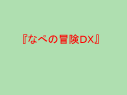

Main pages
Images
![14.1 KB[GIF]](nape18000p00.gif.view.generated.html){kind=link}
nape18000p00.gif
Image
Audio
Text
nape18.txt
Text本文プレビュー
2001/11/19 20:12 nape18000p00.gif 2000/12/29 01:43 finir.wav 2001/11/19 20:12 default.htm 2000/12/29 01:43 mysterious.wav 2001/11/19 20:12 nape18_002.htm 2000/12/29 01:44 are.wav 2001/11/19 20:12 nape18_003.htm 2000/07/07 20:23 nape18004001.wav 2001/11/19 20:12 nape18_004.htm 2000/07/07 20:23 wind.wav 2001/11/19 20:12 nape18_005.htm 2000/09/03 20:22 nape18006001.wav 2001/11/19 20:12 nape18_006.htm 2001/03/27 20:29 bgm4.wav 2001/11/19 20:12 nape18_007.htm 2001/11/19 19:39 exorcist.mid 2001/11/19 20:12 nape18_008.htm 2001/08/11 19:29 bgm2.wav 2001/11/19 20:12 nape18_009.htm 1999/04/05 23:43 se7.wav 2001/11/19 20:12 nape18_010.htm 2000/08/27 00:22 bgm1.wav 2001/11/19 20:12 nape18_011.htm 2001/11/19 20:12 nape18_012.htm 2000/12/29 01:43 drink.wav 2001/11/19 20:12 nape18_013.htm 2000/12/29 01:44 nape18014001.wav 2001/11/19 20:12 nape18_014.htm 2001/11/19 20:12 nape18_015.htm 2001/11/19 20:12 nape18_016.htm 2001/01/27 15:47 bgm3.wav 2001/11/19 20:12 nape18_017.htm 2000/03/08 16:57 nape18018001.wav 2001/11/19 20:12 nape18_018.htm